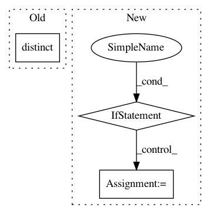

8bc46bda10949ec121c784fa0dd70deea12438f9,foreman/data_refinery_foreman/foreman/management/commands/rerun_salmon_old_samples.py,,update_salmon_versions,#Any#,37
Before Change
def update_salmon_versions(experiment: Experiment):
quant_results = get_quant_results_for_experiment(experiment)
salmon_versions = list(quant_results.order_by("-organism_index__created_at")\
.values_list("organism_index__salmon_version", flat=True)\
.distinct())
if len(salmon_versions) <= 1:
// only apply this command on experiments that have more than one salmon version applied on their samples
After Change
latest_salmon_version = None
for quant_result in quant_results:
if not latest_salmon_version:
// we can safely ignore the latest salmon version, that will be the first
// quant result. Note we are ordering by -organism_index__created_at
latest_salmon_version = quant_result.organism_index.salmon_version
elif latest_salmon_version != quant_result.organism_index.salmon_version:
// we found a quant result associated with an experiment where we need to run salmon
// hopefully each computational result is associated with a single sample
for sample in quant_result.samples.all():
original_files = list(sample.original_files.all())
if not len(original_files): continue
// Ensure that there"s no processor jobs for these original files that the foreman
// might want to retry (failed | hung | lost)
has_open_processor_job = ProcessorJob.objects.all()\
.filter(original_files = original_files[0], pipeline_applied=ProcessorPipeline.SALMON)\
.filter(
Q(success=False, retried=False, no_retry=False) |
Q(success=None, retried=False, no_retry=False, start_time__isnull=False, end_time=None, nomad_job_id__isnull=False) |
Q(success=None, retried=False, no_retry=False, start_time=None, end_time=None)
)\
.exists()
if (has_open_processor_job):
continue
create_processor_job_for_original_files(original_files)
def update_salmon_all_experiments():
Creates a tximport job for all eligible experiments.
eligible_experiments = Experiment.objects.all()\
.filter(technology="RNA-SEQ", num_processed_samples=0)\
In pattern: SUPERPATTERN
Frequency: 3
Non-data size: 3
Instances
Project Name: AlexsLemonade/refinebio
Commit Name: 8bc46bda10949ec121c784fa0dd70deea12438f9
Time: 2019-08-22
Author: arielsvn@gmail.com
File Name: foreman/data_refinery_foreman/foreman/management/commands/rerun_salmon_old_samples.py
Class Name:
Method Name: update_salmon_versions
Project Name: okfn-brasil/serenata-de-amor
Commit Name: 1542abe1e397f328be4532a60d542021aa43cc46
Time: 2019-02-27
Author: cuducos@users.noreply.github.com
File Name: jarbas/chamber_of_deputies/twitter.py
Class Name: Twitter
Method Name: queryset
Project Name: AlexsLemonade/refinebio
Commit Name: bd49927a7775cbb4c6c49a8610bfb49659439b25
Time: 2019-12-21
Author: davidsmejia@gmail.com
File Name: api/data_refinery_api/views.py
Class Name: TranscriptomeIndexList
Method Name: get_queryset